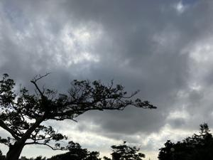
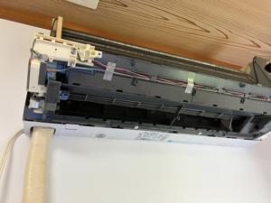
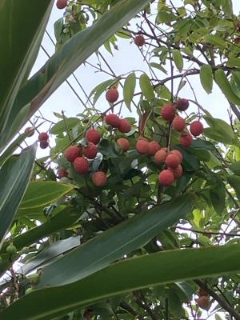

うるがいの話 ある日
最新: エアコンクリーニング【うるがいの話 ある日】とは 一日だけのプログです
『うるがいの話』の最新一日だけのプログで、通信料が少なく経済的だ。カニの画像をクリックすると全ての日付が載る『うるがいの話』サイトを表示します
|
|
【うるがいの話】 うるがい(ｳﾙｶﾞｲ urugai)とは、『もずくがに』の名前でとても大きくなります。 |
|---|---|
|
|
【カミマヤーの話】 猫のことを方言でマヤーといいます。カミマヤー（kamimayaa）とは、神の猫のことです。 |
|
【たながぁの音楽】 たながぁ（ﾀﾅｶﾞｰ tanagaa）とは手長えびのことで、何種類かあり大きいのは車 エビぐらいになります。 |

|
【ぶながぁの話】 ぶながぁ(ﾌﾞﾅｶﾞｰ bunagaa)とは、赤い髪の毛、赤い身体、そして身長は１ｍ２０ｃｍ ぐらい、川の蟹を食べているの目撃された。場所は沖縄県国頭郡大宜味村のと ある村僕の隣近所に住んでいる爺さんから、聞いた話です。 |
|
|
【ギーマの話】 ギーマ(giima)とは、山原の里山に咲くスズランに似た、 花を付けます。実は食べられます、 気が付くと口の周りが紫になっています。 |
2024年05月31日 (金）エアコンクリーニング
15:22
 
午前中は、２台のエアコンクリーニングの立ち合いをする。業者の人が一台
目をみるなり『このメーカーは組み立てが難し機種ですね、それ購入してか
ら１０年すぎているので保証対象外ですね、私達が引き上げた後に故障する
と保証できませんが、どうしますか？』といきなり言われる。購入（２０１
２年８月３０日）の保証期間１０年は過ぎていますが、室内機と室外機とと
もに６、７年前に故障で丸ごと新品になっている ので、、、、、
ま、故障した場合は新品を買いますので、クリーニングお願いしますと答え
る。クリーニングを始めると『以外と汚れてませんね』、そうでしょう、機
械を丸ごと入れ替えてますから。
そして一度もクリーニングしていない２０１７年購入の２台目のダイキンへ
『お！、これはかなり汚れてますね、予定に入っていなかった〇〇の部品３
千３百円ですけどクリーニングしますか』、当然イエスとそして無事１２時
前に終了。２台で３万６千３百円也。あの汚れをみると納得の値段かな。

９時から１２時まで、立ち合いの役割の私は、ネットフリックスで『愛の不
時着』をひたすら見ていた。
１５時１２分 ビットコインの総資産 ￥３１、１３７（↑１２０）